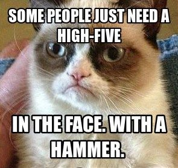

Origin / History
The grumpy cat origin are traced to a Reddit post on September 22 of 2012. The real name of grumpy cat is "Tardar Sauce" and he was born on April the 4th of 2012. Have a look at his official Website.
Usage
Very simply but, the grumpy cat is usually used to show mean message for just about everything and especially peoples.